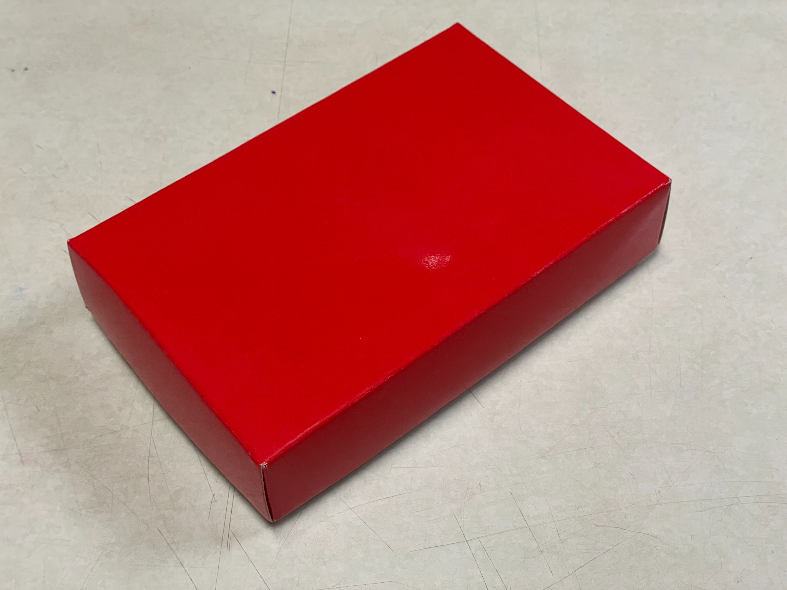

固定節奏
龜鹿膏
膏狀型態，適合固定節奏使用，可直接食用或搭配溫熱水。
規格：100 g / 罐
成分：龜板萃取物、鹿角萃取物、粉光蔘、枸杞、紅棗、黃耆
查看詳情固定節奏
膏狀型態，適合固定節奏使用，可直接食用或搭配溫熱水。
規格：100 g / 罐
成分：龜板萃取物、鹿角萃取物、粉光蔘、枸杞、紅棗、黃耆
查看詳情
方便快速
180cc 鋁袋型態，方便快速，適合忙碌或希望準備步驟更少的人。
規格：180 cc / 包
成分：水、龜板萃取物、鹿角萃取物、粉光蔘、枸杞、紅棗、黃耆
查看詳情
料理搭配
75g 藍盒型態，適合放進燉湯與日常料理，從餐桌開始建立節奏。
規格：75 g / 盒（8入）
成分：龜板萃取物、鹿角萃取物
查看詳情
傳統規格
龜鹿膠一斤裝，適合已熟悉龜鹿湯塊、需要較大份量或通路詢問的人。
規格：一斤裝 / 盒
成分：龜板相關萃取物、鹿角相關萃取物
查看詳情
自己搭配
粉末型態，方便加入日常飲品，也適合自己安排搭配方式。
規格：75 g / 罐
成分：鹿茸粉
查看詳情